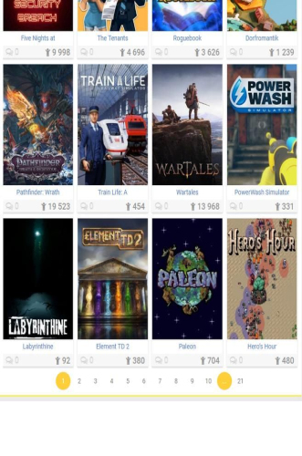

一个免费的俄语游戏资源库，值不值得花时间折腾？
Byrutor 不收一分钱——但免费不等于零成本。俄文界面、网络门槛、资源质量参差，这笔时间账我替你算三遍，看你属于哪类人。
先把话摊开：它到底收不收钱？
去 Byrutor官网 逛一圈就能发现——最抓人的卖点就是不收钱，也不设付费墙。安装包 3MB，装上就能用，浏览条目、搜索筛选、下载管理全不拦你。样本里翻遍了也没找到任何「会员版」「高级订阅」「解锁更多资源」的说法，FAQ 里甚至专门提了一句：凡以「会员费」「解压密码收费」为名收钱的同名站点，按仿冒处理。
所以这篇账本不是算「要不要掏钱」，而是算「要不要花时间折腾一个免费工具」——因为免费的东西，最贵的往往是你的时间。
免费到底给了什么
先把 Byrutor 能给的东西列清楚，好跟下面的代价对照：
- 两万多条资源条目，覆盖 Steam、Epic 等主流 PC 平台的 3A、独立、怀旧作品，按题材、平台、年代、热度多路分类
- 五块核心功能：条目浏览（分类/新品/更新/年度四路入口）、检索筛选（关键词 + 多条件组合）、详情查看（简介/截图/配置/评价）、下载任务管理（批量 + 断点续传）、资讯社区（新游动态 + 玩法百科）
- 客户端定位：它不内置游戏，是「资源目录 + 下载管理」——找条目、看信息、把获取过程管起来，游戏本体你自己拿
- 注册可选：不登录就能用全量浏览，登录只影响社区互动和部分设置
说人话就是：它把一个俄语社区维护的 PC 游戏资源目录搬进了手机，让你在碎片时间里高效地「种草 + 存清单」，等回到电脑上再慢慢下。
但免费有三笔隐藏成本
第一笔：俄文界面的认知门槛
Byrutor 的底层是俄语社区，客户端界面默认俄语（可以切英文，中文没有）。你点开主页，四路导航条的文字、部分游戏标题、社区评论区，都是西里尔字母。
轻度用的话，用熟了那几个图标倒也能凑活——分类是小图标、新品是个「NEW」标签、搜索框打中文关键词也能搜中文条目的标题。但主力用的时候就会频繁卡壳：一条游戏详情页里，配置要求是俄文、玩家评价是俄文、版本更新日志是俄文，想搞清楚「这个版本有没有汉化补丁」「这台笔记本能不能跑」，得来回切翻译软件。
这比中文资源站慢至少 30% 的浏览效率。
第二笔：下载链路的不确定性
Byrutor 的资源获取方式是磁力链接、BT 种子、直链三种，资源主体在俄语社区那边，客户端只负责把条目和获取通道展示给你。这意味着：
- 种子做种量不一定够，冷门老游戏可能慢到几十 KB/s
- 直链可能过期或被墙
- 你需要自己配合电脑端的下载工具来拿大体积游戏（样本里专门有一页讲「用电脑端下载工具配合获取」）
对比一下：国内的资源站（比如某盒、某游戏下载中心），虽然可能有广告，但下载通道稳定，装完就能在客户端里直接玩。Byrutor 则是「找条目 → 复制链接 → 切电脑 → 开下载工具 → 等下完 → 再装」，链路长了四五步。
第三笔：资源质量的不确定性
两万多条是个大数，但大数不等于精品率高。俄语社区的条目，描述里可能没提这个版本有没有病毒（Byrutor文档里专门有「安全软件提示风险时怎么判断」「下载前后的四个安全习惯」两页），配置要求的翻译也不一定准确。你下完装不上、闪退、发现少了个 DLC，这种概率比国内精品资源站高。
样本里还提到，不同来源的信息对不上是常态——同一个游戏，体积和版本号，A 条目跟 B 条目写的不一样，你得自己判断哪个对。
分三类人算账
轻度用户（一两个月找一个游戏）
场景：偶尔想下个 10 年前的老 RPG 怀旧一下，或者朋友推荐了个独立小游戏想试试。
免费版够不够？完全够。你花 5 分钟在手机上搜一下，找到条目，存个书签或者记下编号，回去慢慢处理。两万多条的量级基本覆盖你能想到的所有老游戏，冷门的独立作品也能搜到。
每单位时间成本：搜一次 + 看两条详情 ≈ 10 分钟。俄文界面的干扰在这个频率下可以忽略，下载链路的问题大概率碰不到——热门老游戏种子都挺健康。
我的账本上：这 10 分钟值。别掏钱，也别纠结，从下载拿一份装上就用。
主力用户（每周追 1~2 个新作更新）
场景：平时工作忙，周末想系统地装几个新游戏。你对 PC 平台的资源生态有概念，知道磁力链接怎么下，但不想在每个资源站都注册一遍、记住一堆广告弹窗的关闭按钮。
免费版够不够？能用，但效率打折扣。主力用的时候俄文界面开始烦人了——你一周可能要切 20 次翻译软件，下载链路的不确定性也变成了确定性的时间浪费（比如周二晚上想下一个热门新作，发现种子没人做，得等两三天）。
每单位时间成本：每周 ≈ 2~3 小时（搜索 + 筛选 + 下载管理 + 处理问题）。对比一下——如果换成国内精品资源站的付费会员（比如某站年卡 199 元，每月 ≈ 16.6 元），稳定下载通道 + 中文界面 + 社区互助，每周能省 1 小时以上。
我的账本上：你得自己掂量。199 元一年换每周多 1 小时的游戏时间，值不值？对你来说，那 1 小时是用来加班赶稿还是用来通关，这个问题只有你能答。但有一点可以确定——Byrutor 免费，你没花这 199 元，但你花了时间。
重度用户（装机 / 搞收藏 / 帮朋友找资源）
场景：你就是那个朋友群里「帮我找个 XX 游戏」的人，或者你在搭自己的游戏资源库，动辄同时下十几个大包，对每款游戏的版本、DLC、汉化补丁门儿清。
免费版够不够？技术上能跑，但体验接近原始社会。Byrutor 的下载管理是手机端的，批量操作能力有限；社区互动也没那味儿——你想跟同好交流「XX 版本的汉化补丁出了没」，俄文社区你也插不上话。
每单位时间成本：这个没法精确算，因为你大概率不会只靠 Byrutor。重度用户的典型工作流是——Byrutor 搜条目确认有没有 → 然后去国内几个熟悉的资源站 + 社区论坛找质量靠谱的版本 → 用电脑端工具下载 → 存进自己的 NAS。Byrutor 在这个流程里只贡献「条目确认」这一步，大概占你总时间的 10%。
我的账本上：你连「要不要为 Byrutor 付费」这个问题都不会问。你的账本里根本没有 Byrutor——它只是你资源检索链路里的一个小环节。
替代方案：不折腾 Byrutor，你还有哪些路
说实话，如果你不属于重度用户，Byrutor 的免费优势在当前阶段并不碾压：
- 国内资源站：XX 游戏盒子、XX 下载中心，界面全中文、下载通道稳定、社区互助活跃。缺点是广告多、可能有捆绑安装、条目数量比 Byrutor 少一个量级。
- Steam + Epic 正版：最贵但最省心。有网就行，不用折腾下载链路，社区评价全是中文。缺点是花钱（但你本来就不想花？那这个跳过）。
- 其他海外资源聚合工具：有些做了中文本地化的替代品，资源数量比 Byrutor 少一些，但界面友好。
你会发现——Byrutor 真正独特的地方就两点：两万多条的规模和完全免费。除此之外，其他维度几乎都有更好的选择。
结论：你属于哪类？
| 你的使用强度 | 我的建议 |
|---|---|
| 轻度（一两个月一次） | 装上就用，别想太多。免费 + 覆盖广，你的使用频率下隐藏成本可以忽略 |
| 主力（每周 1~2 个新作） | 先免费跑两个月，觉得值再考虑付费替代。两个月的免费体验能让你算清楚「省下的时间值不值那 199 元年卡」 |
| 重度（装机 / 收藏） | 别纠结 Byrutor，建立自己的资源检索链路。它只是一环，你需要的是整个生态 |
| 从来不碰 PC 游戏下载 | 这篇文章你怎么看到的？ |
最后补一句：这篇账本写的是我自己的掂量过程，不是你必须遵守的答案。有人就是喜欢折腾俄文界面、就是觉得两万多条比中文界面值——这也是完全合理的选择，毕竟「免费」本身就是一种很强的说服力。
这套资料在三个仓库都能拿到——国内访问怕慢的话走Gitee，GitCode作为备份镜像也行，想追最新提交看GitHub就好。每次更新完文档都会同步推过去，差不了几小时。
